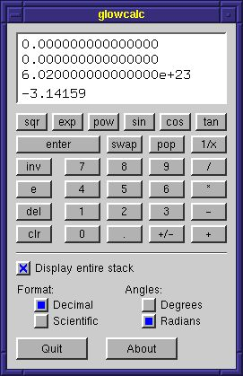

|
Contents |
Lesson 6 |
Lesson 8 |
| Introduction |
This lesson will describe the more advanced widget capabilities of GLOW. By examining a graphical scientific calculator program, you will learn the low-level parameter block API of GLOW, as well as some additional advanced widget capabilities such as event filtering. At the end of this lesson, you should have a solid knowledge of GLOW's widget system and how to use it to create finely-tuned and powerful graphical user interfaces.
| About the calculator |
 In this lesson, we'll look at an RPN (reverse polish notation) scientific calucluator using GLOW. The calculator includes a display, a keypad consisting of GLOW pushbuttons, and a set of other controls to manipulate calculator preferences (such as whether to use degrees or radians). The user can control it using the mouse on the graphical keypad, or using the keyboard.
Reverse polish notation is an alternate way of notating mathematical expressions. It puts the operator last instead of between the operands. For example, what under normal notation appears as:
2 + 3appears in RPN as
2 3 +RPN calculators, like those manufactured by HP, work in this way. As you can see in the image to the right, the calculator has no equals button, but has an extra button called "enter". Everyone knows that to evaluate the above expression using a "normal" calculator, you would press:
[2] [+] [3] [=]and the calculator will display the answer, 5. With an RPN calculator, you press the "enter" key to separate the operands, and when you press the plus key, it evalulates the expression immediately.
[2] [enter] [3] [+]and the calculator will display the answer, 5. There are actually a number of advantages to using this style of working with a calculator, and many people find that the RPN notation is more efficient than the notation used in common calculators. The sidebar "About Reverse Polish Notation" gives some more information about RPN and how it can be used.
We won't take a close look at how the actual RPN evaluation engine is implemented, because it isn't really important for the purposes of this tutorial. I've written a class CalcEngine that we can use as a black box for now. It is implemented in the files calcengine.h and calcengine.cpp. All we need to know for now is how to use this class. It implements pretty much the entire calculator, minus the user interface. When a button is pressed, we need to call the Button() method, and pass it either the digit that was pressed, or one of the constants defined in the CalcEngine::Button enumeration, denoting one of the other buttons. We can determine what value should be displayed by calling the methods Display() or Value().
The level parameter to those last two methods specifies which position on the stack we want to look at. Normally, we'll be looking at level 0, the top of the stack, but sometimes we'll want to see what's further down in the stack. For more information on exactly what we mean by the stack, see the sidebar.
Why use RPN anyway? Why not make a normal calculator?
Because RPN is better!!
Source: calcengine.h
Source: calcengine.cpp
Sidebar: About Reverse Polish Notation
| The low-level API |
A graphical calculator user interface should look as much like a real calculator as possible, and this means an orderly arrangement of the keys into a grid. Unfortunately, the QuickPalette API we looked at in lesson 4 is not well-suited for such an arrangement of widgets. We need finer control over the exact size and placement of the buttons. Therefore, GLOW provides a low-level API that givew you detailed control over the size, location, appearance and behavior of each widget you create. Each widget class also provides a wealth of methods for dynamically modifying any widget's size, location, appearance and behavior.
Setting up a widget window
To see this API in action, let's take a look at the file calcui.cpp. This file implements the class CalcUI, which manages a single calculator user interface window. (It is declared in calcui.h; if you open that file, you'll see that the class declaration is very simple.) About halfway through calcui.cpp is the constructor for class CalcUI. Let's go through this constructor.
_window = new GlowFixedSizeWidgetWindow("glowcalc", GlowWindow::autoPosition, GlowWindow::autoPosition, 255, 385);That first line constructs a window that will hold the calculator widgets. The class we're using is GlowFixedSizeWidgetWindow, which is a GLOW window that holds widgets and holds a fixed size like GlowFixedSizeWindow. In fact, the class GlowQuickPaletteWindow is a subclass of GlowFixedSizeWidgetWindow. The class GlowWidgetWindow, which does not hold a fixed size, is also available for use. Notice that we need to specify the position and size of the window explicitly. The next line constructs a receiver object for events raised by widgets we'll put in this window:
_receiver = new CalcUIReceiver(engine, _window);Parameter blocks
Now we'll start populating the window with widgets. First, we'll create the display. It'll be a panel widget with a "sunken" appearance and a white background, and we'll display the numbers inside. To create the panel, we first create and fill out a parameter block, and then pass the parameter block to the constructor for GlowPanelWidget.
GlowPanelParams pparams; pparams.height = 80; pparams.width = 235; pparams.x = 10; pparams.y = 10; pparams.backColor = GlowColor::white; pparams.style = GlowPanelWidget::loweredStyle; _receiver->_displayPanel = new GlowPanelWidget(_window, pparams);Now before I hear gasps of horror and start getting hate emails, let me explain how the parameter block system works. Widgets can have a wide range of parameters, from position and size to drawing styles, colors, labels, event notification preferences and special behaviors. Trying to put all those parameters into a constructor, even with C++ default parameters, would be ridiculous. Instead, you fill out a parameter block and pass a reference to the constructor. However, these aren't ordinary parameter blocks you may have used in other APIs. Since we're using C++, the default constructor for each parameter block object automatically fills it in with reasonable default values. So when you declare the parameter block, it automatically comes with default parameters. You change only the values pertinent to the particular widget you're creating.
The default values for each parameter block are stored in a static member called defaults. For GlowPanelParams, for example, the defaults are in the global parameter block GlowPanelParams::defaults. You can change the defaults simply by changing this object. For example, if you were to say:
GlowPanelParams::defaults.backColor = GlowColor::white;Then every time you subsequently construct a new GlowPanelParams, the background color parameter will be white. (Initially, the default is a light gray.)
Creating widgets in a hierarchy
Under the parameter block API, you construct a widget by creating it with new, and passing two parameters to the constructor. The second parameter is the parameter block you filled out. The first is either a widget root or a parent widget.
A widget root is a window or subwindow that is designed to contain widgets. Therefore, it's a subclass of either GlowWindow or GlowSubwindow. It is also a subclass of GlowWidgetRoot. Currently, three basic widget root classes are provided: GlowWidgetSubwindow, GlowWidgetWindow and GlowFixedSizeWidgetWindow. (The classes GlowQuickPaletteSubwindow and GlowQuickPaletteWindow are subclasses of GlowWidgetSubwindow and GlowFixedSizeWidgetWindow, respectively, and are therefore also widget roots.) A widget root automatically manages a set of widgets by routing events to the appropriate widget, managing keyboard focus and handling event filters. That is why you do not need to override any OnMouseDown() methods when working with widgets; the widget root handles that for you.
To simply create a widget inside a particular widget root, pass a pointer to the root in the first parameter of the widget's constructor. That is how we created the panel above: we passed _window, which is a pointer to the GlowFixedSizeWidgetWindow we created. You can also pass a pointer to another widget in the first parameter to the constructor. In that case, the new widget will be added as a child of the given widget, the same way we nested widgets inside panels in lessons 4 and 6. The next widgets we create are label widgets that will actually display the text of the calculator's display. They're child widgets of the panel we just created.
GlowLabelParams lparams; lparams.height = 15; lparams.width = 225; lparams.x = 5; lparams.y = 5; lparams.font = GlowFont::fixed9by15; _receiver->_displayLabel3 = new GlowLabelWidget( _receiver->_displayPanel, lparams);In the above code, we create a label widget using the parameter block API. Notice that the first parameter to the constructor is a pointer to the panel we had just created; this label is a child widget of the panel and is arranged "inside" it.
We should probably discuss child widgets briefly before moving on to the rest of the code. We used child widgets in lesson 4 to arrange widgets inside GlowQuickPanelWidget objects. Those widgets were children of the panel. A child widget is a child component of its parent widget; therefore, deleting a widget will automatically delete all of its children. In addition, the parent widget has some control over the drawing of the child. Panels, for example, clip (i.e. glScissor) the drawing of their children to the panel's rectangle. Also, if a parent widget is hidden, disabled or moved, the appearance and position of its children are also affected. We'll find this property very useful later on in this lesson.
One thing to note is that, when creating a widget as a child underneath a parent widget, you need to specify the position in the parent widget's local coordinates. What that means is, the origin (0,0) is located at the upper left corner of the parent widget's rectangle. Therefore, when we position the label above at (5,5), it is indented 5 pixels in both x and y inside the panel. However, in window coordinates, the label is located at (15,15), since the panel itself is positioned in the window at (10,10).
The next few lines create additional labels for displaying four levels of the stack.
lparams.y = 22; _receiver->_displayLabel2 = new GlowLabelWidget( _receiver->_displayPanel, lparams); lparams.y = 39; _receiver->_displayLabel1 = new GlowLabelWidget( _receiver->_displayPanel, lparams); lparams.y = 60; _receiver->_displayLabel0 = new GlowLabelWidget( _receiver->_displayPanel, lparams);Notice that we can reuse the parameter block. It is, after all, just a struct. The parameters for the new labels are the same as the original label, except for the vertical position.
Creating the pushbutton grid
Now that we've created the display, let's go on to the rest of the calculator. We're going to make the remaining widgets children of a non-drawing panel. Why we're doing this will become clear later on, but I'll give you a hint right now. One of the features of the calculator is that the display can either display a single line, or all four lines of the stack. That is, the display can be resized vertically. When that happens, all the widgets below it must be moved up or down. How can we do that efficiently?
pparams.height = 275; pparams.width = 235; pparams.x = 10; pparams.y = 100; pparams.backColor = GlowPanelParams::defaults.backColor; pparams.style = GlowPanelWidget::plainStyle; _receiver->_mainPanel = new GlowPanelWidget(_window, pparams);Here we reuse the GlowPanelParams parameter block to create another panel. To make it non-drawing, we set the style to GlowPanelWidget::plainStyle (i.e. no border) and set the color back to the default gray, which we retrieve from the defaults parameter block. (Remember we had set the color to white for the display panel.) This panel is a toplevel widget. Its parent is the widget root.
Next we create a whole bunch of pushbuttons for the keys of the calculator. Here is the code for the first one:
GlowPushButtonParams bparams; bparams.receiver = _receiver; bparams.text = "clr"; bparams.width = 40; bparams.height = 20; bparams.x = 0; bparams.y = 125; bparams.refcon = CalcEngine::clearButton; new GlowPushButtonWidget(_receiver->_mainPanel, bparams);Things to note. First off, to specify a receiver for the widget, set the receiver field of the parameter block. For our calculator, we're going to use the receiver object we created to receive events from all the widgets. Also, remember that the x and y coordinates are in local coordinates of the invisible panel we created, since the pushbutton is being created as a child of the panel.
The refcon field sets a value for the widget's reference constant. Every widget has a reference constannt associated with it. It is a long integer (usually 32 bits, although it may be 64 bits on some systems-- long enough to hold a pointer) that you can use for your own purposes. For this calculator, we're going to use the reference constant to identify the pushbutton. We'll use it to store the button code that should be sent to the CalcEngine when this button is pressed.
Non-drawing panels
The next bunch of lines create the remaining buttons. We won't look at them in detail; it should be pretty straightforward. So let's skip down to look at another rather interesting technique. We'll start about a score of lines down where this comment appears:
// SPECIAL FUNCTIONSHere we're going to create the buttons for the transcendental functions. Each function (sqr, exp, power, sin, cos, tan) has an inverse associated with it. To handle this, we created an "inverse" button in one of the rows of buttons. When pressed, this button will cause the transcendental function buttons to invert-- that is, to toggle between (sqr, exp, power, sin, cos, tan) and (sqrt, log, root, arcsin, arccos, arctan). We'll do this cleverly by creating two sets of buttons, one for the functions, and the other for their inverses. At any given time, one of these sets will be visible, and the other will be hidden. Pressing the "inverse" button will toggle the visibility.
We'll do this by grouping the two sets into two non-drawing panels. Notice that these panels are nested inside the main non-drawing panel we created earlier:
pparams.width = 235; pparams.height = 20; pparams.x = 0; pparams.y = 0; // Panel 1 is for the "normal" keys (e.g. exp, sin) _receiver->_panel1 = new GlowPanelWidget(_receiver->_mainPanel, pparams); // Panel 2 is for the "inverse" keys (e.g. log, arcsin) _receiver->_panel2 = new GlowPanelWidget(_receiver->_mainPanel, pparams);The next lines create those twelve buttons, as child widgets of those two panels. They are pretty straightforward, so let's skip another hundred lines or so to this point:
// Initial inverse state is false, so hide panel 2 _receiver->_panel2->Hide();Here we get a big hint about why all these non-drawing panels are being created. Remember that parent widgets can affect the drawing of their children. In this case, we're hiding the second panel (the one containing the inverted functions, i.e. sqrt, log, root, arcsin, arccos, arctan). This has the affect of automatically hiding those buttons as well. In fact, now, to switch all six buttons, we need only to make two method calls: hide one panel and show the other.
Additional notes
I'll let you look at the rest of the constructor at your leisure. It creates several more controls at the bottom of the calculator, for controlling preferences such as whether trigonometric computations should be done in degrees or radians. Pay special attention to the creation of radio buttons (GlowRadioButtonWidget). Those widgets are special widgets in that they must be created as child widgets of a GlowRadioGroupWidget. The radio group manages the set of radio buttons and keeps track of which one is currently selected.
You may also notice calls to the method CropWidth():
checkbox->CropWidth();CropWidth() is a special method of GlowCheckBoxWidget and GlowRadioButtonWidget that truncates the width of the widget to the minimum needed for the box and the label. This is recommended when you create a check box or radio button, because it ensures that the button responds to mouse clicks only over the area where the widget is actually drawn.
At the very end of the constructor is another mysterious line. We'll look at it later in this lesson.
Man, that was complicated...
Yes, I know. You may be wondering why some of those things were done, especially the non-drawing panels. We'll see some of the benefits in the next section, however, when we look at the widget event handlers and how we can use the groupings implied by putting widgets into panels to dynamically modify the user interface very easily.
Source: calcui.h
Source: calcui.cpp
Reference: GlowCheckBoxWidget
Reference: GlowFixedSizeWidgetWindow
Reference: GlowLabelParams
Reference: GlowLabelWidget
Reference: GlowPanelParams
Reference: GlowPanelWidget
Reference: GlowPushButtonParams
Reference: GlowPushButtonWidget
Reference: GlowRadioButtonWidget
Reference: GlowRadioGroupWidget
Reference: GlowWidget
Reference: GlowWidgetRoot
| Advanced widget manipulation |
Responding to widget events
So as you may have noticed in the previous section, nearly all the widgets were set up to notify our receiver object, of type CalcUIReceiver, when toggled. Let's look at that receiver class now and get an idea of how it works.
class CalcUIReceiver : public GlowPushButtonReceiver, public GlowRadioButtonReceiver, public GlowCheckBoxReceiver, public GlowWidgetKeyboardFilter { ...This object is set up to receive pushbutton events, radio button events and checkbox events. Those you should understand from our discussion in lesson 4. The class also subclasses GlowWidgetKeyboardFilter, indicating that it filters keyboard events. We'll look at event filters later, but first, let's examine the widget event handlers.
First, let's take a look at the pushbutton event handler. Most of the pushbuttons correspond to calculator functions and digits; we handle those by passing the reference constant of the pushbutton to the method CalcEngine::Button().
if (message.widget->GetRefCon() >= 0) { _engine->Button(message.widget->GetRefCon()); UpdateDisplay(); }The UpdateDisplay() method simply reads the current state of the calculator engine and sets up the display accordingly, by setting the text of the appropriate label widgets.
The next piece of code handles the quit pushbutton. We identify this pushbutton by looking for the reference constant -1.
else if (message.widget->GetRefCon() == -1) { exit(0); }Handling the inverse button
The button with reference constant -2 is the inverse button. We want to handle this by "toggling" the transcendental function keys between normal and inverse functions (e.g. between exp and log). If you recall, we grouped each set of buttons into a panel, one for the normal functions and one for the inverse functions. To toggle the function, we just hide the visible panel and show the invisible panel. Since the buttons are child widgets of the panel, this has the affect of hiding and showing those buttons as a group.
else if (message.widget->GetRefCon() == -2) { if (_panel1->IsVisible()) { _panel1->Hide(); _panel2->Show(); _inverseButton->SetBoxColor(GlowColor(0.9, 0.7, 0.7)); } else { _panel2->Hide(); _panel1->Show(); _inverseButton->SetBoxColor(GlowPushButtonParams::defaults.boxColor); } }Note that we can also set the color of the button. When we switch to inverse mode, we set the button to a reddish color; when we switch back to normal mode, we set the color back to the default gray. Colors can be specified in several ways. Shown above, you can construct a color by passing RGB values as floats to the constructor of the class GlowColor. That constructor can also accept integers in the range [0..255]. Also shown above, you can reference a color that already is defined, such as the color in the parameter block defaults. The GlowColor class also provides a set of common colors as static member objects, such as GlowColor::white, which we used to specify the background color of the display panel.
Ready-to-use windows
Reference constant -3 identifies the "About" button. We respond to it by popping up an "About" box, which we'll implement using a GlowMessageWindow. The ready-to-use window classes also provide a low-level parameter block API for creation; this code illustrates how to use it:
else if (message.widget->GetRefCon() == -3) { GlowMessageWindowParams mparams; mparams.windowTitle = "About GlowCalc"; mparams.x = _window->GlobalPositionX()+30; mparams.y = _window->GlobalPositionY()+30; if (message.modifiers & Glow::ctrlModifier) { mparams.text = "GlowCalc\nA GLOW-based RPN calculator\nby Daniel Azuma\n\n" "Down with monopolistic software corporations!"; } else { mparams.text = "GlowCalc\nA GLOW-based RPN calculator\nby Daniel Azuma"; } GlowMessageWindow* messageWind = new GlowMessageWindow(mparams); ...A few things to notice in that code. First, we position the about box window above the calculator window by setting the x and y coordinates according to tthe global (screen) position of the calculator window. Second, notice the test of message.modifiers. This field indicates which modifier keys were down when the "about" button was pressed. Here we implemented a little Easter Egg: if the user control-clicks the "about" button, a special little message is addedd to the about box text.
Modal windows
The last line introduces one more useful concept: modal windows.
Glow::PushModalWindow(messageWind);A "modal" window is a window that locks the program into a mode of operation. In practice, modal windows grab events and do not allow other windows to receive user input until the modal window is closed. GLUT normally does not support event grabbing or modal windows, but GLOW can simulate the behavior of a modal window.
The call to Glow::PushModalWindow() establishes the given window as modal. It automatically deactivates all the widgets in all other windows associated with the program. In fact, it recursively deactivates all the components in all other windows. This results in widgets graying out and not responding to events. For other types of components, it changes the event mask that controls what events are delivered. If you look closely at the GlowSubwindow interface, you'll notice methods that can read and set both the normal event mask and the "inactive" event mask. The latter is the event mask that goes in effect when the subwindow is deactivated. Normally it is set to Glow::noEvents, (e.g. subwindows don't respond to any events when inactive, such as when another window is modal), but that can be changed.
When a window is made modal, all the other windows and widgets are deactivated automatically. You can also deactivate widgets and other components manually, by calling the Activate() and Deactivate() methods of GlowComponent. You saw an example of this in lesson 4, when we deactivated the sliders controlling "multicolor" parameters when the drawing style was set to something other than "multicolor". Remember that, by deactivating a panel, the sliders, which were child widgets of the panel, were automatically deactivated as well. When the panel was re-activated, the sliders also automatically re-activated. The same happens when you activate and deactivate plain components or windows: all their children in the component hierarchy are also recursively deactivated.
You can query the activation state of a component or widget by calling one of the methods GlowComponent::IsActive(), GlowComponent::IsActiveStandby() or GlowComponent::IsInactive(). A component is in "inactive" mode if it has been explicitly deactivated by a call to GlowComponent::Deactivate(). It is in "active-standby" mode if it has not been explicitly deactivated but is inactive because a parent has been deactivated, or because another window has been made modal.
Also notice that the call to make a window modal is called "PushModalWindow()". To make the current modal window un-modal, call Glow::PopModalWindow(). Also, as the names suggest, GLOW keeps a stack of modal windows. You can make another window modal even if there is already a modal window. In this case, the current modal window will be deactivated in favor of the new modal window. When the new window is un-modalized by popping it from the stack, the original modal window regains its place at the top of the stack, and is therefore re-modalized.
When a modal window is closed, it is automatically popped from the modal window stack. That is the case with our about box: GlowMessageWindow automatically causes the window to close when one of the buttons is pressed. This automatically causes the window to be un-modalized, thus re-activating all the calculator controls. We don't need to pop the window off the stack manually.
Handling the display checkbox
I know this is a lot of information, but let's look at one more piece of code as another example of how widgets can be manipulated easily. We added a checkbox to the user interface. Toggling the checkbox is supposed to toggle the display between one-line mode and four-line mode. (In four-line mode, the entire RPN stack is visible.) Because this causes the display to be resized vertically, all the buttons and other controls need to be moved up and down. We have a lot of controls; this would take a lot of code, except that we chose to group them all as children of a non-drawing panel. Therefore, to move all those widgets, we just need to move their parent panel. Since the children are positioned relative to the parent panel, this causes them to move automatically. Take a look at the code from the check box receiver:
if (message.state == GlowCheckBoxWidget::off) { // Going to single-line display _displayPanel->Reshape(235, 25); _displayLabel0->Move(5, 5); _displayLabel1->Hide(); _displayLabel2->Hide(); _displayLabel3->Hide(); _mainPanel->Move(10, 45); _window->ForceReshape(255, 330); } else { // Going to multi-line display _displayPanel->Reshape(235, 80); _displayLabel0->Move(5, 60); _displayLabel1->Show(); _displayLabel2->Show(); _displayLabel3->Show(); _mainPanel->Move(10, 100); _window->ForceReshape(255, 385); }Notice that we only need to move the widget _mainPanel to move all its child widgets. Also notice that we resize the window by calling ForceReshape() rather than Reshape(). Because the window is a fixed-size window, simply calling Reshape() would just cause it to snap back to its original fixed size.
Source: calcui.h
Source: calcui.cpp
Reference: Glow
Reference: GlowCheckBoxMessage
Reference: GlowFixedSizeWidgetWindow
Reference: GlowMessageWindow
Reference: GlowMessageWindowParams
Reference: GlowPanelWidget
Reference: GlowPushButtonMessage
Reference: GlowPushButtonWidget
Reference: GlowWidget
| Event filtering |
The graphical interface we have developed is nice, but often, keyboard input tends to be more efficient for an experienced user. Therefore, we want our calculator to respond to keyboard presses as well.
Now, there are several ways to do this. One, we can subclass GlowFixedSizeWidgetWindow and override the OnKeyboard() method. This is, however, not recommended because the widget root normally wants to control keyboard events so it can manage the keyboard focus. A better way is to write a widget that accepts keyboard events, and give it the keyboard focus. However, this requires that you write a widget, a technique that we aren't going to cover until the next lesson.
Another alternative is to install a keyboard event filter. That is what we will demonstrate here. An event filter is a class that receives notification of all events destined for a widget root, and can optionally modify them, or even consume them (i.e. stop them from being reported normally.) In our case, we installed an event filter at the end of the CalcUI constructor:
_window->RegisterFilter(_receiver);Our receiver class inherits from GlowWidgetKeyboardFilter. Widget keyboard event filters must implement the following virtual method:
bool GlowWidgetKeyboardFilter::OnFilter(GlowWidgetKeyboardData& data)The method is called whenever a keyboard event is detected in the widget root, but before it is passed on to the widget currently holding the keyboard focus. The filter can handle the event if it wants, or even change the event by changing the event data referenced by the parameter. If the method returns true, the (possibly modified) event is handled normally by the widget root by passing it on to the widget currently holding the keyboard focus. However, if the filter method returns false, the event is consumed and not reported normally.
In our case, we implement the filter to detect keystrokes that our calculator can understand:
if (data.key >= '0' && data.key <= '9') { _engine->Button(data.key - '0'); UpdateDisplay(); } else switch (int(data.key)) { case '+': _engine->Button(CalcEngine::plusButton); UpdateDisplay(); break; ...The filter returns false, indicating that we've handled the event, and it should not be reported to any widgets.
In addition to event filters attached to a widget root, you can also install general event filters that filter ALL mouse and keyboard events as soon as GLOW detects them. Global event filters subclass GlowMouseFilter or GlowKeyboardFilter, and are installed using the function Glow::RegisterFilter(). Global filters are run first. Therefore, if a keyboard event occurs and is destined for a widget: first, any installed global keyboard filters are run on it, then any keyboard filters associated with that widget root are run on it. Finally, if none of those filters consumed the event, it is reported to the widget.
Event filters can help create some powerful user interface effects, but they should be used with caution, since they globally affect the way events are reported.
Source: calcui.h
Source: calcui.cpp
Reference: Glow
Reference: GlowKeyboardData
Reference: GlowKeyboardFilter
Reference: GlowMouseData
Reference: GlowMouseFilter
Reference: GlowWidgetKeyboardData
Reference: GlowWidgetKeyboardFilter
Reference: GlowWidgetRoot
| Putting it together |
The rest of the program is pretty straightforward. The file glowcalc.cpp contains the main() function, which simply initializes GLOW, creates a calculator engine and a calculator user interface, and enters the main loop.
Compile and run the program. It's a full-fledged, working scientific calculator. Try some calculations on it!
Source: glowcalc.cpp
| Where to go from here |
This has been a complicated lesson that has covered a lot of features and techniques for using GLOW widgets. Many of those features you will not need to use often. Most simple programs can probably be written using only the QuickPalette API and the techniques we covered in lesson 4. However, if you want fine control over your user interface, there are a number of powerful tools built into the API. Experiment, and look through the reference pages for more ideas on how to use GLOW to construct powerful user interfaces.
|
Contents |
Lesson 6 |
Lesson 8 |
The GLOW Toolkit